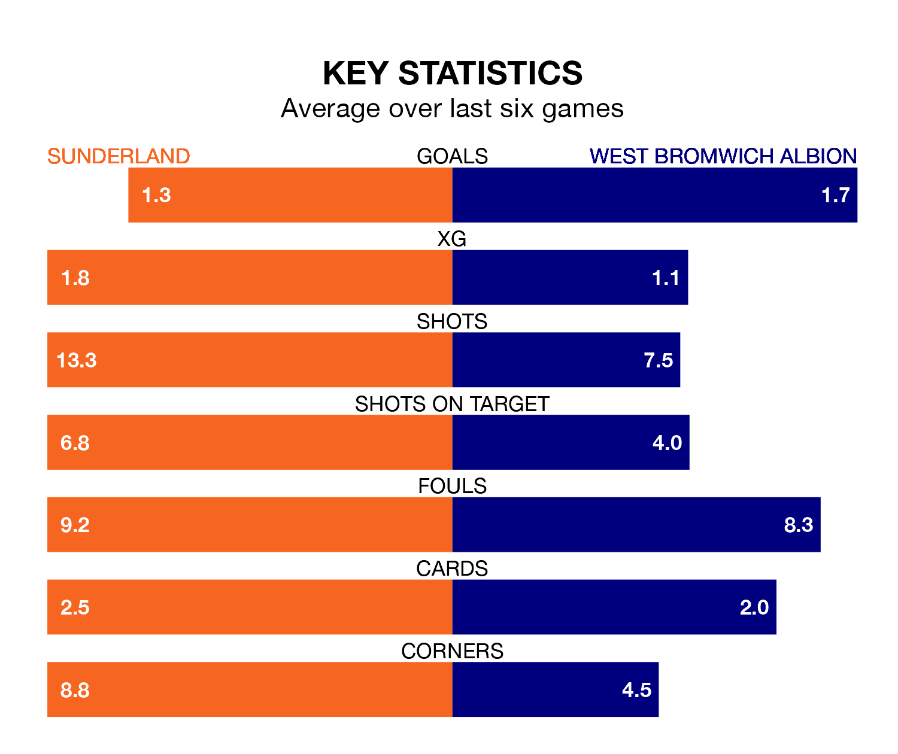

Sunderland host West Bromwich Albion on Saturday at the Stadium of Light in the Championship.
In their last league match, on December 2, Sunderland drew with Millwall 1-1 away, with their goal scored by Jack Clarke.
West Bromwich lost, 2-1 at home against Leicester City, with Josh Maja scoring their goals.
In Alex Palmer, West Bromwich can rely on one of the league's safest pair of hands. He has kept nine clean sheets in his 19 appearances this season, and no 'keeper has prevented the opposition scoring more often in the Championship.
In Sunderland's net, Anthony Patterson has five clean sheets in 19 games. He has conceded a goal every 81 minutes, 20% more often than the 101 minutes between goals for Palmer.
In the last 10 years, Sunderland and West Bromwich have played each other on nine occasions. Sunderland won two of them, West Bromwich three, and they drew four times.
On average, the Black Cats scored 0.9 goals and the Baggies 1.0 in those matches.
Their last meeting was on April 23, when Sunderland won 2-1 away.
With 30 goals in 19 games so far this season, Albion are scoring more than average in the league with 1.6 goals per game. And they are conceding fewer than average, letting in 19 goals at a rate of 1.0 per game.
The Black Cats are also above average scorers, with 1.5 goals per game, compared to a league average of 1.4. They have conceded 1.2 goals per game.
The Baggies are fifth in the table after 19 games, of which they have won nine and drawn five, earning 32 points.
The hosts are four places behind the away side in ninth, with eight wins and three draws putting them on 27 points.
Sunderland are in mixed form in the Championship, with two wins and two draws from their last six games.
With four wins and two losses over that period, West Bromwich's form is better – they have taken 12 points from 18, compared to Sunderland's eight.
